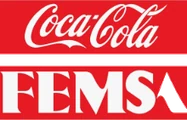
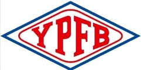
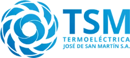
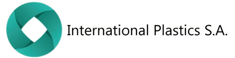

Auditorías de seguridad, inspecciones técnicas y ensayos no destructivos
Verificamos la integridad de los activos de la industria del oil & gas, la energía y la minería: inspeccionamos tanques de almacenamiento, auditamos instalaciones, rehabilitamos equipos de GLP y los certificamos ante la Secretaría de Energía.
- +15 añosde experiencia
- API 653inspector certificado
- Nivel IIIUS · PM · LP (IRAM-ISO 9712)

Instalaciones auditadasParque de esferas de GLP · YPF CILC
Rehabilitación de equipos almacenadores de GLP
Rehabilitación decenal de esferas, tanques y otros equipos de la industria del GLP: inspección integral, ensayos, pruebas y certificación de aptitud ante la Secretaría de Energía.
- Inspección visual externa e interna
- Ensayos no destructivos: UT, PM, LP, AE y PAUT
- Prueba hidráulica, informe y certificación

Empresas que confían en Veatec




Cuatro líneas de trabajo para la integridad de sus activos
Rehabilitación de equipos almacenadores de GLP
Rehabilitación decenal de esferas, tanques y otros equipos de GLP, con certificación final.
Ver servicio →
Inspecciones técnicas
Integridad de tanques aéreos de almacenamiento de hidrocarburos según Res. 277/25 y API 653.
Ver servicio →
Auditorías de seguridad
Funcionamiento y seguridad de instalaciones inscriptas en la Secretaría de Energía y bocas de expendio.
Ver servicio →
Ensayos no destructivos
Ultrasonido, emisión acústica, LFET, corrientes inducidas, partículas magnéticas y más.
Ver servicio →Qué gana su operación
Seguridad industrial
Prevención de accidentes e incidentes en instalaciones y equipos críticos.
Mantenimiento optimizado
Decisiones basadas en el estado real del activo y mayor vida útil de los equipos.
Menos paradas imprevistas
Reducción de paradas no planificadas y de los costos asociados.
Cumplimiento normativo
Inspecciones según Res. 277/25 y API 653, auditorías según Res. 404/94 y Res. 1102/04.
Inspectores con certificación vigente
- API 653Inspección de tanques de almacenamiento
- Nivel III · IRAM-ISO 9712Ultrasonido, Partículas Magnéticas y Líquidos Penetrantes
- Nivel II · ISO 9712Emisión Acústica
Trabajos en plantas de todo el país


¿Tiene un equipo para inspeccionar, auditar o rehabilitar?
Cuéntenos qué necesita y le respondemos con una propuesta técnica.